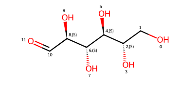

9. RDKit#
1. Introduction#
RDKit (Rational Discovery) is a cheminformatics toolbox for which Greg Landrum is the lead developer.
RDKit provides tools for:
Creating and parsing molecular structures (SMILES, SDF, etc.)
Computing chemical descriptors and fingerprints
Drawing chemical structures and highlighting substructures
Performing substructure and similarity searches
Working with reactions, 3D conformers, and force fields
1.1 RDkit Resources#
Resource |
Link |
Description |
|---|---|---|
GitHub Repository |
Source code, issue tracking, and installation instructions |
|
Documentation (ReadTheDocs) |
Core documentation and API references |
|
Official Website |
Central hub with installation links, tutorials, and project info |
conda install -c rdkit rdkit
2. RDkit Major Submodules#
Submodule |
Description |
|---|---|
|
Core chemical functionality (molecules, atoms, bonds, reactions) |
|
Fingerprints and similarity metrics |
|
Machine learning tools, often used with molecular descriptors |
|
2D and 3D geometry operations and vector math |
|
Diversity filtering for compound selection |
|
Virtual screening and filtering tools |
2.1 RDKit Functions and Classes#
Name |
Type |
Module |
Description |
|---|---|---|---|
|
Class |
|
Core molecule object |
|
Class |
|
Read/write version of |
|
Class |
|
Atom object in a molecule |
|
Class |
|
Bond between two atoms |
|
Class |
|
Stores 3D atom coordinates |
|
Function |
|
Creates a |
|
Function |
|
Converts a molecule back to SMILES |
|
Function |
|
Loads a molecule from |
|
Function |
|
Saves a molecule to file |
|
Function |
|
Adds explicit hydrogens |
|
Function |
|
Removes hydrogens |
|
Function |
|
Standardizes valences, charges, etc. |
|
Function |
|
Generates 2D coordinates for drawing |
|
Function |
|
Generates 3D coordinates (distance geometry) |
|
Function |
|
Creates multiple 3D conformers |
|
Function |
|
Minimizes energy using UFF |
|
Function |
|
Minimizes energy using MMFF94 |
|
Function |
|
Creates a reaction object from SMARTS |
|
Function |
|
Applies a reaction to reactants |
|
Function |
|
Generates circular (ECFP-like) fingerprint |
|
Function |
|
Bit vector version for similarity search |
|
Function |
|
Computes similarity between fingerprints |
|
Function |
|
Returns a PIL image of the molecule |
|
Function |
|
Displays multiple molecules as a grid |
|
Setting |
|
Enables high-quality SVG rendering in Jupyter |
|
Function |
|
Computes molecular weight |
|
Function |
|
Computes logP |
|
Function |
|
Rotatable bond count |
|
Function |
|
Calculates topological polar surface area |
|
Function |
|
Counts rings in a molecule |
|
Function |
|
Computes monoisotopic molecular weight |
|
Function |
|
Aligns one molecule to another (3D) |
3. rdkit.Chem#
Submodule |
Description |
|---|---|
|
3D coordinates, conformers, reaction SMARTS, molecular mechanics |
|
Visualization and rendering tools (e.g., SVGs for notebooks) |
|
Standard descriptors (MolWt, LogP, TPSA, etc.) |
|
Tools for creating fingerprints (e.g., Morgan, MACCS) |
|
More specific descriptors (e.g., fragment counts, topological descriptors) |
|
Reaction objects, SMARTS parsing |
|
Tools for alignment and force-field calculations |
|
File I/O and general molecule operations |
3.1 AllChem (rdkit.chem.AllChem)#
Key Functions in rdkit.Chem.AllChem#
Function Name |
Description |
|---|---|
|
Generates a 3D conformer from a molecule (uses distance geometry) |
|
Generates multiple conformers (for conformer search) |
|
Optimizes geometry using UFF force field |
|
Optimizes geometry using MMFF94 force field |
|
Returns MMFF-specific parameters for a molecule |
|
Returns a UFF force field object |
|
Returns a MMFF force field object |
|
Matches 2D coordinates across conformers |
|
Computes circular Morgan fingerprints (similar to ECFP) |
|
Computes a bit vector version of the Morgan fingerprint |
|
Creates a chemical reaction object from a SMARTS string |
|
Applies a chemical reaction object to a set of reactants |
|
Transfers bond order info to a generated 3D molecule |
|
Aligns one molecule to another (conformer or scaffold alignment) |
|
Generates 2D coordinates for drawing (used in visualization) |
Generate 3D structure from SMILES#
from rdkit import Chem
from rdkit.Chem import AllChem
from rdkit.Chem import Draw
mol = Chem.MolFromSmiles("CCO") # Ethanol
mol = Chem.AddHs(mol) # Add hydrogens (important for 3D)
AllChem.EmbedMolecule(mol) # Generate 3D coordinates
AllChem.UFFOptimizeMolecule(mol) # Minimize energy with UFF force field
# Visualize 2D structure (you can't see the 3D here, but it's encoded)
Draw.MolToImage(mol)
Generating RDkit Molecules from SMILES
caffeine = Chem.MolFromSmiles('Cn1cnc2c1c(=O)n(C)c(=O)n2C')
caffeine
caffeine
type(caffeine)
rdkit.Chem.rdchem.Mol
from rdkit import Chem
from rdkit.Chem import Draw
from IPython.display import display
# Display the molecule
display(Draw.MolToImage(caffeine))
# Print the type below it
print(type(caffeine))
<class 'rdkit.Chem.rdchem.Mol'>
Chem.Draw.MolToFile(caffeine, 'caffeine.svg',
size=(500,500),
imageType='svg')
To install jcamp you need to open your terminal
conda activate your_env_name
pip install jcamp
The IR spectra of caffeine can be downloaded from NIST WebBook as a jcmap-dx file,
from rdkit import Chem
from rdkit.Chem import Draw
import matplotlib.pyplot as plt
from jcamp import jcamp_readfile
from mpl_toolkits.axes_grid1.inset_locator import inset_axes
import numpy as np
# Create molecule object
caffeine = Chem.MolFromSmiles('Cn1cnc2c1c(=O)n(c(=O)n2C)C')
mol_image = Draw.MolToImage(caffeine, size=(200, 200))
# Read JCAMP-DX spectrum
spectrum = jcamp_readfile('data/caffeine_IR.jdx')
x = np.array(spectrum['x'])
y = np.array(spectrum['y'])
# Ensure x and y are the same length
min_len = min(len(x), len(y))
x = x[:min_len]
y = y[:min_len]
# Filter to 400–4000 cm⁻¹ range
mask = (x >= 400) & (x <= 4000)
x_filtered = x[mask]
y_filtered = y[mask]
# Plot with inset image
fig, ax = plt.subplots(figsize=(10, 6), constrained_layout=True)
# Plot your main data
ax.plot(x_filtered, y_filtered, color='darkred')
ax.set_xlabel('Wavenumber (cm⁻¹)')
ax.set_ylabel('Absorbance')
ax.set_title('IR Spectrum of Caffeine')
ax.invert_xaxis()
ax.grid(True)
# Add inset axes
ax_inset = inset_axes(ax, width="30%", height="30%", loc='upper right')
ax_inset.imshow(mol_image)
ax_inset.axis('off')
plt.show()
3.2 Draw (rdkit.Chem.Draw)#
The following material is adapted from Charles Weiss First we will read a text file with amino acids as smiles strings into a Pandas DataFame
import pandas as pd
df = pd.read_csv('data/amino_acid_SMILES.txt', skiprows=2)
df.head()
| name | SMILES | |
|---|---|---|
| 0 | alanine | C[C@@H](C(=O)[O-])[NH3+] |
| 1 | arginine | [NH3+][C@@H](CCCNC(=[NH2+])N)C(=O)[O-] |
| 2 | asparagine | O=C(N)C[C@H]([NH3+])C(=O)[O-] |
| 3 | aspartate | C([C@@H](C(=O)[O-])[NH3+])C(=O)[O-] |
| 4 | cysteine | C([C@@H](C(=O)[O-])[NH3+])S |
Now we will use list-comprehension to create a list of rdkit molecule objects from the SMILES Strings in the dataframe
AminoAcids = [Chem.MolFromSmiles(SMILES) for SMILES in df['SMILES']]
print(AminoAcids)
print(type(AminoAcids))
[<rdkit.Chem.rdchem.Mol object at 0x7c31c9f2adc0>, <rdkit.Chem.rdchem.Mol object at 0x7c31c9f2ae30>, <rdkit.Chem.rdchem.Mol object at 0x7c31c9f2aea0>, <rdkit.Chem.rdchem.Mol object at 0x7c31c9f2af10>, <rdkit.Chem.rdchem.Mol object at 0x7c31c9f2af80>, <rdkit.Chem.rdchem.Mol object at 0x7c31c9f2aff0>, <rdkit.Chem.rdchem.Mol object at 0x7c31c9f2b060>, <rdkit.Chem.rdchem.Mol object at 0x7c31c9f2b0d0>, <rdkit.Chem.rdchem.Mol object at 0x7c31c9f2b140>, <rdkit.Chem.rdchem.Mol object at 0x7c31c9f2b1b0>, <rdkit.Chem.rdchem.Mol object at 0x7c31c9f2b220>, <rdkit.Chem.rdchem.Mol object at 0x7c31c9f2b290>, <rdkit.Chem.rdchem.Mol object at 0x7c31c9f2b300>, <rdkit.Chem.rdchem.Mol object at 0x7c31c9f2b370>, <rdkit.Chem.rdchem.Mol object at 0x7c31c9f2b3e0>, <rdkit.Chem.rdchem.Mol object at 0x7c31c9f2b450>, <rdkit.Chem.rdchem.Mol object at 0x7c31c9f2b4c0>, <rdkit.Chem.rdchem.Mol object at 0x7c31c9f2b530>, <rdkit.Chem.rdchem.Mol object at 0x7c31c9f2b5a0>, <rdkit.Chem.rdchem.Mol object at 0x7c31c9f2b610>]
<class 'list'>
MolsToGridImage#
This has one positional argument which is a container data type containing the molecular objects you want to plot. It is followed by optional keyword arguments. Note for the legends we used the “name” column of the dataframe, and we used SVG images.
Chem.Draw.MolsToGridImage(AminoAcids,
molsPerRow=4,
subImgSize=(200,200),
legends=list(df['name']),
useSVG=True)
4. Stereochemistry#
Sterochemistry in SMILES#
@or@@to represent tetrahedral chirality/and\for cis/trans (E/Z) stereochemistry around double bonds
lactic1 = Chem.MolFromSmiles("C[C@H](O)C(=O)O")
lactic2 = Chem.MolFromSmiles("C[C@@H](O)C(=O)O")
#Draw.MolToImage(lactic)
cis_butene = Chem.MolFromSmiles("C/C=C/C") # cis
trans_butene = Chem.MolFromSmiles("C/C=C\\C") # trans
Draw.MolsToGridImage([lactic1, lactic2, cis_butene, trans_butene], legends=["chiral", "chiral", "cis", "trans"])
Create molecule objects from SMILES strings.
from rdkit import Chem
from rdkit.Chem import Draw
import requests
# Define SMILES strings for the molecules
smiles_list = [
"C[C@H](O)C(=O)O", # Lactic acid (R)
"C[C@@H](O)C(=O)O", # Lactic acid (S)
"C/C=C/C", # cis-2-butene
"C/C=C\\C" # trans-2-butene
]
# Convert SMILES strings to RDKit molecule objects
molecules = [Chem.MolFromSmiles(smiles) for smiles in smiles_list]
molecules
[<rdkit.Chem.rdchem.Mol at 0x7c31c99f4660>,
<rdkit.Chem.rdchem.Mol at 0x7c31c99f4820>,
<rdkit.Chem.rdchem.Mol at 0x7c31c99f6490>,
<rdkit.Chem.rdchem.Mol at 0x7c31c99f6500>]
Retrieve IUPAC Names Using NCI Chemical Resolver
def get_iupac_name(smiles):
try:
url = f"https://cactus.nci.nih.gov/chemical/structure/{smiles}/iupac_name"
response = requests.get(url)
response.raise_for_status()
return response.text
except requests.RequestException:
return "IUPAC name not found"
iupac_names = [get_iupac_name(smiles) for smiles in smiles_list]
print(iupac_names)
['(2S)-2-hydroxypropanoic acid', '(2R)-2-hydroxypropanoic acid', '(E)-But-2-ene', '(Z)-But-2-ene']
Generate Iosmeric Smiles Strings
isomeric_smiles = [Chem.MolToSmiles(mol, isomericSmiles=True) for mol in molecules]
Create Legend Combining IUPAC Names and SMILES
legends = [f"{name}\n{smiles}" for name, smiles in zip(iupac_names, isomeric_smiles)]
Organize Molecules and Legends into a 2x2 Grid
# Arrange molecules and legends into a 2x2 grid
mols_matrix = [molecules[:2], molecules[2:]]
legends_matrix = [legends[:2], legends[2:]]
Generate and Display the Grid
from IPython.display import display
from rdkit.Chem.Draw import MolsMatrixToGridImage
# Generate the grid image
img = MolsMatrixToGridImage(
molsMatrix=mols_matrix,
legendsMatrix=legends_matrix,
subImgSize=(300, 300)
)
# Display the image (in Jupyter Notebook)
#img
display(img)
# To save as image, uncomment the next line
# img.save("molecule_grid.png")
Steroisomers of Glucose#
Glucose has 4 chiral centers and so \(2^4\) = 16 sterioisomers

Generate a Grid of the stereoisomers with both their IUPAC name and isomeric SMILES Strings
Generate a tuple containing the 16 rdkit molecule objects representing each stereoisomer
from rdkit import Chem
from rdkit.Chem import AllChem
from rdkit.Chem.EnumerateStereoisomers import EnumerateStereoisomers, StereoEnumerationOptions
# Base SMILES for D-glucose without specified stereochemistry
base_smiles = "OC[C@H]1O[C@H](O)[C@H](O)[C@H](O)[C@H]1O"
base_mol = Chem.MolFromSmiles(base_smiles)
# Set up options to enumerate all stereoisomers
opts = StereoEnumerationOptions(onlyUnassigned=False, unique=True)
isomers = tuple(EnumerateStereoisomers(base_mol, options=opts))
import requests
from rdkit import Chem
def get_iupac_name(smiles):
try:
url = f"https://cactus.nci.nih.gov/chemical/structure/{smiles}/iupac_name"
response = requests.get(url, timeout=5)
response.raise_for_status()
return response.text.strip()
except requests.RequestException:
return "IUPAC name not found"
# Prepare data for each isomer
isomer_data = []
for mol in isomers:
smiles = Chem.MolToSmiles(mol, isomericSmiles=True)
name = get_iupac_name(smiles)
isomer_data.append((mol, name, smiles))
print(isomer_data)
print(type(isomer_data))
print(f"There are {len(isomer_data)} tuples in this list, meaning there are {len(isomer_data)} isomers." )
[(<rdkit.Chem.rdchem.Mol object at 0x7c31c9859fd0>, '(2S,3R,4R,5S,6S)-6-(hydroxymethyl)oxane-2,3,4,5-tetrol', 'OC[C@@H]1O[C@H](O)[C@H](O)[C@H](O)[C@@H]1O'), (<rdkit.Chem.rdchem.Mol object at 0x7c31c985a070>, '(2S,3R,4R,5S,6R)-6-(hydroxymethyl)oxane-2,3,4,5-tetrol', 'OC[C@H]1O[C@H](O)[C@H](O)[C@H](O)[C@@H]1O'), (<rdkit.Chem.rdchem.Mol object at 0x7c31c985a110>, '(2R,3R,4R,5S,6S)-6-(hydroxymethyl)oxane-2,3,4,5-tetrol', 'OC[C@@H]1O[C@@H](O)[C@H](O)[C@H](O)[C@@H]1O'), (<rdkit.Chem.rdchem.Mol object at 0x7c31c985a1b0>, '(2R,3R,4R,5S,6R)-6-(hydroxymethyl)oxane-2,3,4,5-tetrol', 'OC[C@H]1O[C@@H](O)[C@H](O)[C@H](O)[C@@H]1O'), (<rdkit.Chem.rdchem.Mol object at 0x7c31c985a250>, 'IUPAC name not found', 'OC[C@@H]1O[C@H](O)[C@@H](O)[C@H](O)[C@@H]1O'), (<rdkit.Chem.rdchem.Mol object at 0x7c31c985a2f0>, '(2S,3S,4R,5S,6R)-6-(hydroxymethyl)oxane-2,3,4,5-tetrol', 'OC[C@H]1O[C@H](O)[C@@H](O)[C@H](O)[C@@H]1O'), (<rdkit.Chem.rdchem.Mol object at 0x7c31c985a390>, '(2R,3S,4R,5S,6S)-6-(hydroxymethyl)oxane-2,3,4,5-tetrol', 'OC[C@@H]1O[C@@H](O)[C@@H](O)[C@H](O)[C@@H]1O'), (<rdkit.Chem.rdchem.Mol object at 0x7c31c985a430>, '(2R,3S,4R,5S,6R)-6-(hydroxymethyl)oxane-2,3,4,5-tetrol', 'OC[C@H]1O[C@@H](O)[C@@H](O)[C@H](O)[C@@H]1O'), (<rdkit.Chem.rdchem.Mol object at 0x7c31c985a4d0>, '(2S,3R,4S,5S,6S)-6-(hydroxymethyl)oxane-2,3,4,5-tetrol', 'OC[C@@H]1O[C@H](O)[C@H](O)[C@@H](O)[C@@H]1O'), (<rdkit.Chem.rdchem.Mol object at 0x7c31c985a570>, 'IUPAC name not found', 'OC[C@H]1O[C@H](O)[C@H](O)[C@@H](O)[C@@H]1O'), (<rdkit.Chem.rdchem.Mol object at 0x7c31c985a610>, '(2R,3R,4S,5S,6S)-6-(hydroxymethyl)oxane-2,3,4,5-tetrol', 'OC[C@@H]1O[C@@H](O)[C@H](O)[C@@H](O)[C@@H]1O'), (<rdkit.Chem.rdchem.Mol object at 0x7c31c985a6b0>, '(2R,3R,4S,5S,6R)-6-(hydroxymethyl)oxane-2,3,4,5-tetrol', 'OC[C@H]1O[C@@H](O)[C@H](O)[C@@H](O)[C@@H]1O'), (<rdkit.Chem.rdchem.Mol object at 0x7c31c985a750>, 'IUPAC name not found', 'OC[C@@H]1O[C@H](O)[C@@H](O)[C@@H](O)[C@@H]1O'), (<rdkit.Chem.rdchem.Mol object at 0x7c31c985a7f0>, '(2S,3S,4S,5S,6R)-6-(hydroxymethyl)oxane-2,3,4,5-tetrol', 'OC[C@H]1O[C@H](O)[C@@H](O)[C@@H](O)[C@@H]1O'), (<rdkit.Chem.rdchem.Mol object at 0x7c31c985a890>, '(2R,3S,4S,5S,6S)-6-(hydroxymethyl)oxane-2,3,4,5-tetrol', 'OC[C@@H]1O[C@@H](O)[C@@H](O)[C@@H](O)[C@@H]1O'), (<rdkit.Chem.rdchem.Mol object at 0x7c31c985a930>, '(2R,3S,4S,5S,6R)-6-(hydroxymethyl)oxane-2,3,4,5-tetrol', 'OC[C@H]1O[C@@H](O)[C@@H](O)[C@@H](O)[C@@H]1O'), (<rdkit.Chem.rdchem.Mol object at 0x7c31c985a9d0>, '(2S,3R,4R,5R,6S)-6-(hydroxymethyl)oxane-2,3,4,5-tetrol', 'OC[C@@H]1O[C@H](O)[C@H](O)[C@H](O)[C@H]1O'), (<rdkit.Chem.rdchem.Mol object at 0x7c31c985aa70>, '(2S,3R,4R,5R,6R)-6-(hydroxymethyl)oxane-2,3,4,5-tetrol', 'OC[C@H]1O[C@H](O)[C@H](O)[C@H](O)[C@H]1O'), (<rdkit.Chem.rdchem.Mol object at 0x7c31c985ab10>, 'IUPAC name not found', 'OC[C@@H]1O[C@@H](O)[C@H](O)[C@H](O)[C@H]1O'), (<rdkit.Chem.rdchem.Mol object at 0x7c31c985abb0>, '(2R,3R,4R,5R,6R)-6-(hydroxymethyl)oxane-2,3,4,5-tetrol', 'OC[C@H]1O[C@@H](O)[C@H](O)[C@H](O)[C@H]1O'), (<rdkit.Chem.rdchem.Mol object at 0x7c31c9c067f0>, '(2S,3S,4R,5R,6S)-6-(hydroxymethyl)oxane-2,3,4,5-tetrol', 'OC[C@@H]1O[C@H](O)[C@@H](O)[C@H](O)[C@H]1O'), (<rdkit.Chem.rdchem.Mol object at 0x7c31c985ac50>, '(2S,3S,4R,5R,6R)-6-(hydroxymethyl)oxane-2,3,4,5-tetrol', 'OC[C@H]1O[C@H](O)[C@@H](O)[C@H](O)[C@H]1O'), (<rdkit.Chem.rdchem.Mol object at 0x7c31c985ad40>, 'IUPAC name not found', 'OC[C@@H]1O[C@@H](O)[C@@H](O)[C@H](O)[C@H]1O'), (<rdkit.Chem.rdchem.Mol object at 0x7c31c985ade0>, '(2R,3S,4R,5R,6R)-6-(hydroxymethyl)oxane-2,3,4,5-tetrol', 'OC[C@H]1O[C@@H](O)[C@@H](O)[C@H](O)[C@H]1O'), (<rdkit.Chem.rdchem.Mol object at 0x7c31c985ae80>, 'IUPAC name not found', 'OC[C@@H]1O[C@H](O)[C@H](O)[C@@H](O)[C@H]1O'), (<rdkit.Chem.rdchem.Mol object at 0x7c31c985af20>, '(2S,3R,4S,5R,6R)-6-(hydroxymethyl)oxane-2,3,4,5-tetrol', 'OC[C@H]1O[C@H](O)[C@H](O)[C@@H](O)[C@H]1O'), (<rdkit.Chem.rdchem.Mol object at 0x7c31c985afc0>, '(2R,3R,4S,5R,6S)-6-(hydroxymethyl)oxane-2,3,4,5-tetrol', 'OC[C@@H]1O[C@@H](O)[C@H](O)[C@@H](O)[C@H]1O'), (<rdkit.Chem.rdchem.Mol object at 0x7c31c985b060>, '(2R,3R,4S,5R,6R)-6-(hydroxymethyl)oxane-2,3,4,5-tetrol', 'OC[C@H]1O[C@@H](O)[C@H](O)[C@@H](O)[C@H]1O'), (<rdkit.Chem.rdchem.Mol object at 0x7c31d18b31a0>, '(2S,3S,4S,5R,6S)-6-(hydroxymethyl)oxane-2,3,4,5-tetrol', 'OC[C@@H]1O[C@H](O)[C@@H](O)[C@@H](O)[C@H]1O'), (<rdkit.Chem.rdchem.Mol object at 0x7c31c985b100>, '(2S,3S,4S,5R,6R)-6-(hydroxymethyl)oxane-2,3,4,5-tetrol', 'OC[C@H]1O[C@H](O)[C@@H](O)[C@@H](O)[C@H]1O'), (<rdkit.Chem.rdchem.Mol object at 0x7c31c985b1f0>, '(2R,3S,4S,5R,6S)-6-(hydroxymethyl)oxane-2,3,4,5-tetrol', 'OC[C@@H]1O[C@@H](O)[C@@H](O)[C@@H](O)[C@H]1O'), (<rdkit.Chem.rdchem.Mol object at 0x7c31c985b290>, '(2R,3S,4S,5R,6R)-6-(hydroxymethyl)oxane-2,3,4,5-tetrol', 'OC[C@H]1O[C@@H](O)[C@@H](O)[C@@H](O)[C@H]1O')]
<class 'list'>
There are 32 tuples in this list, meaning there are 32 isomers.
So where is the 5th stereocenter?
from rdkit import Chem
from rdkit.Chem import Draw
from rdkit.Chem.Draw import rdMolDraw2D
# Define the SMILES string for glucose
smiles = 'OC[C@H]1O[C@H](O)[C@H](O)[C@H](O)[C@H]1O'
mol = Chem.MolFromSmiles(smiles)
# Assign stereochemistry to the molecule
Chem.AssignStereochemistry(mol, force=True, cleanIt=True)
# Find chiral centers
chiral_centers = Chem.FindMolChiralCenters(mol, includeUnassigned=True)
print(f"Chiral centers: {chiral_centers}")
# Prepare the molecule for drawing
drawer = rdMolDraw2D.MolDraw2DCairo(500, 500)
drawer.drawOptions().addAtomIndices = True
drawer.drawOptions().addStereoAnnotation = True
rdMolDraw2D.PrepareAndDrawMolecule(drawer, mol)
drawer.FinishDrawing()
# Save the image
with open('glucose_chiral_centers.png', 'wb') as f:
f.write(drawer.GetDrawingText())
Chiral centers: [(2, 'R'), (4, 'S'), (6, 'R'), (8, 'R'), (10, 'R')]
from rdkit import Chem
from rdkit.Chem import Draw
from rdkit.Chem.Draw import IPythonConsole
# Enable SVG rendering in Jupyter
IPythonConsole.ipython_useSVG = True
IPythonConsole.drawOptions.addAtomIndices = True
IPythonConsole.drawOptions.addStereoAnnotation = True
# Define the SMILES string for D-glucose
smiles = 'OC[C@H]1O[C@H](O)[C@H](O)[C@H](O)[C@H]1O'
mol = Chem.MolFromSmiles(smiles)
# Display the molecule
mol
from rdkit.Chem import Draw
# Extract molecules and legends
mols = [data[0] for data in isomer_data]
legends = [f"{data[1]}\n{data[2]}" for data in isomer_data]
# Generate and display the grid image
img = Draw.MolsToGridImage(mols, legends=legends, molsPerRow=4, subImgSize=(200, 200))
img

from rdkit.Chem import Draw
# Extract molecules and legends
mols = [data[0] for data in isomer_data]
legends = [f"{data[1]}\n{data[2]}" for data in isomer_data]
# Generate and display the grid image
img = Draw.MolsToGridImage(mols, legends=legends, molsPerRow=4, subImgSize=(200, 200))
img
Open Tautomer Form#
from rdkit import Chem
from rdkit.Chem import Draw
# Explicitly defined stereochemistry
smiles_open_chain = "OC[C@H](O)[C@H](O)[C@H](O)[C@H](O)C=O"
smiles_alpha = "OC[C@H]1O[C@@H](O)[C@H](O)[C@H](O)[C@H]1O" # α-D-glucopyranose
smiles_beta = "OC[C@H]1O[C@H](O)[C@H](O)[C@H](O)[C@H]1O" # β-D-glucopyranose
mols = [Chem.MolFromSmiles(smi) for smi in [smiles_open_chain, smiles_alpha, smiles_beta]]
# Optional: add hydrogens for better 2D layout
mols = [Chem.AddHs(mol) for mol in mols]
# Generate image
Draw.MolsToImage(mols, legends=[
"Open-Chain D-Glucose",
"alpha-D-Glucopyranose (axial OH at C1)",
"beta-D-Glucopyranose (equatorial OH at C1)"
], subImgSize=(300, 300))
open_chain_smiles = 'OC[C@H](O)[C@H](O)[C@H](O)[C@H](O)C=O'
from rdkit import Chem
from rdkit.Chem import Draw
from rdkit.Chem.Draw import IPythonConsole
# Enable SVG rendering in Jupyter
IPythonConsole.ipython_useSVG = True
# Create the molecule from the SMILES string
mol = Chem.MolFromSmiles(open_chain_smiles)
# Display the molecule
mol
from rdkit import Chem
from rdkit.Chem.EnumerateStereoisomers import EnumerateStereoisomers, StereoEnumerationOptions
# Define the open-chain SMILES for D-glucose
open_chain_smiles = 'OC[C@H](O)[C@H](O)[C@H](O)[C@H](O)C=O'
mol = Chem.MolFromSmiles(open_chain_smiles)
# Set up stereoisomer enumeration options
opts = StereoEnumerationOptions(onlyUnassigned=False, unique=True)
# Generate stereoisomers
stereoisomers = tuple(EnumerateStereoisomers(mol, options=opts))
print(f"Number of open-chain stereoisomers generated: {len(stereoisomers)}")
Number of open-chain stereoisomers generated: 16
from rdkit import Chem
from rdkit.Chem.EnumerateStereoisomers import EnumerateStereoisomers, StereoEnumerationOptions
# Define the open-chain SMILES for D-glucose
open_chain_smiles = 'OC[C@H](O)[C@H](O)[C@H](O)[C@H](O)C=O'
mol = Chem.MolFromSmiles(open_chain_smiles)
# Set up stereoisomer enumeration options
opts = StereoEnumerationOptions(onlyUnassigned=False, unique=True)
# Generate stereoisomers
stereoisomers = tuple(EnumerateStereoisomers(mol, options=opts))
print(f"Number of open-chain stereoisomers generated: {len(stereoisomers)}")
Number of open-chain stereoisomers generated: 16
from rdkit.Chem import Draw
# Generate images with SMILES as legends
images = [Chem.MolToSmiles(mol, isomericSmiles=True) for mol in stereoisomers]
# Create a grid image
img = Draw.MolsToGridImage(stereoisomers, molsPerRow=4, subImgSize=(200, 200), legends=images)
# Display the image
img
5. Descriptors (rdkit.Chem.Descriptors)#
Physicochemical Properties: Basic molecular properties like size, lipophilicity, and polarity (e.g. molecular weight, LogP, polar surface area). These influence solubility, permeability, and drug-likeness.
Topological Indices: Graph-theoretic indices that quantify molecular shape and connectivity (e.g. chi connectivity indices, kappa shape indices, Balaban’s J index). They measure structural complexity and are useful in QSAR modeling.
Structural Features: Simple counts of structural moieties (e.g. ring counts, rotatable bond count, functional group counts). These help profile molecular flexibility, aromaticity, and the presence of particular substructures (used in filters like Lipinski’s Rule of 5).
Electronic Properties: Descriptors capturing electronic distribution (e.g. partial charge extremes, EState indices). They reflect how electron-rich or electron-poor parts of a molecule are, which can affect reactivity and interactions.
Fragment Counts: Indicators for specific functional groups or substructures (usually prefixed with
fr_in RDKit). These count occurrences of motifs like benzene rings, halogens, nitro groups, etc., often used as structural alerts or to calculate fragment-based scores.Drug-Likeness Scores: Composite indices that combine multiple descriptors into a single score evaluating how “drug-like” a molecule is (e.g. QED score). These aid in prioritizing compounds likely to have favorable pharmacokinetic and safety profiles.
Physicochemical Properties#
Descriptor Name |
Description |
|---|---|
MolWt |
Molecular weight (average mass of the molecule) |
ExactMolWt |
Exact molecular weight (monoisotopic mass of the molecule) |
MolLogP |
Wildman–Crippen estimated LogP (octanol–water partition coefficient) |
MolMR |
Wildman–Crippen molar refractivity (volume-dependent refractivity) |
TPSA |
Topological polar surface area (sum of fragment-based polar surface areas) |
LabuteASA |
Labute’s approximate solvent-accessible surface area (MOE ASA) |
Topological Indices#
Descriptor Name |
Description |
|---|---|
Chi0, Chi1 (Chi Indices) |
Molecular connectivity indices of order 0 and 1 (higher orders Chi2–Chi4 also available, including valence (v) and normalized (n) forms) (Getting Started with the RDKit in Python — The RDKit 2025.03.1 documentation). These indices are derived from molecular graph connectivity and help describe molecular topology. |
Kappa1, Kappa2, Kappa3 (Kappa Indices) |
Kier & Hall molecular shape indices of first, second, and third order (Getting Started with the RDKit in Python — The RDKit 2025.03.1 documentation). They quantify shape by comparing the molecule’s graph to idealized linear or ring structures (i.e. capturing branching and complexity). |
BalabanJ |
Balaban’s J index (distance connectivity index) – a topological index accounting for distances in the molecular graph (Molecular descriptors Datagrok). It is used as an overall metric of molecular connectivity and complexity. |
BertzCT |
Bertz’s complexity index – a topological index quantifying molecular complexity (rdkit.Chem.GraphDescriptors module — The RDKit 2025.03.1 documentation) (sums contributions from bonding patterns and heteroatom distribution (rdkit.Chem.GraphDescriptors module — The RDKit 2025.03.1 documentation)). |
Ipc |
Information content index – Shannon information content of the adjacency matrix’s characteristic polynomial coefficients (measures structural information content) (rdkit.Chem.GraphDescriptors module — The RDKit 2025.03.1 documentation). RDKit provides both total (Ipc) and average (AvgIpc) variants of this descriptor. |
WienerIndex |
Wiener index – the sum of all shortest-path distances between pairs of atoms in the molecule (a classic topological index indicating overall connectivity). |
Structural Features#
Descriptor Name |
Description |
|---|---|
HeavyAtomCount |
Number of heavy atoms (non-hydrogen atoms) in the molecule ([Molecular descriptors |
NumHeteroatoms |
Number of heteroatoms (atoms that are not carbon or hydrogen) (rdkit.Chem.Lipinski module — The RDKit 2025.03.1 documentation). |
RingCount |
Total number of rings in the molecule (SSSR count). Note: RDKit also provides specific ring counts like NumAromaticRings, NumSaturatedRings, NumHeterocycles, etc. for more detailed ring analysis. |
NumRotatableBonds |
Number of rotatable bonds (single bonds that can rotate freely, excluding trivial rotations) (rdkit.Chem.Lipinski module — The RDKit 2025.03.1 documentation). |
FractionCSP3 |
Fraction of carbon atoms that are sp³-hybridized (a ratio indicating saturated carbon content) . |
NumHBA / NumHBD (NumHAcceptors / NumHDonors) |
Number of hydrogen bond acceptors and donors, respectively (rdkit.Chem.Lipinski module — The RDKit 2025.03.1 documentation). (Commonly used in Lipinski’s Rule of 5 for drug-likeness.) |
Electronic Properties#
Descriptor Name |
Description |
|---|---|
MaxPartialCharge / MinPartialCharge |
Maximum and minimum partial atomic charge on any atom in the molecule (most positive and most negative partial charges). These are computed (e.g. via Gasteiger charges) to gauge charge distribution. |
MaxAbsPartialCharge / MinAbsPartialCharge |
Maximum and minimum absolute partial charge on any atom – i.e. the largest magnitude partial charges (positive or negative). |
MaxEStateIndex / MinEStateIndex |
Maximum and minimum EState indices in the molecule – the highest and lowest electrotopological state values of any atom . EState indices integrate atom electronegativity with topological environment, indicating reactive centers. |
MaxAbsEStateIndex / MinAbsEStateIndex |
Maximum and minimum absolute EState index values in the molecule . These represent the extremal magnitudes of electrotopological state, regardless of sign. |
Fragment Counts (Functional Group Indicators)#
Descriptor Name |
Description (counts of specific substructures in the molecule) |
|---|---|
fr_benzene |
Number of benzene rings (aromatic C6 rings) ( |
fr_imidazole |
Number of imidazole rings (five-membered aromatic rings with two nitrogens) ( |
fr_halogen |
Number of halogen atoms present (F, Cl, Br, or I) . |
fr_nitro |
Number of nitro groups ( |
fr_ether |
Number of ether groups (oxygen atoms connecting two carbons, incl. phenoxy |
fr_amide |
Number of amide functional groups (–C(=O)NH–) |
Drug-Likeness Scores#
Descriptor Name |
Description |
|---|---|
qed |
QED (Quantitative Estimate of Drug-likeness) – a unitless score from 0 to 1 assessing drug-likeness ([Molecular descriptors |
Summary: The above descriptors provide a quantitative profile of molecules. Physicochemical and electronic descriptors relate to ADME properties and reactivity, topological and structural descriptors capture 2D structure and complexity, fragment counts flag particular functional groups, and drug-likeness indices combine these factors to guide drug discovery decisions. Chemoinformaticians often use these in QSAR models, filtering libraries (e.g. Lipinski’s Rule of 5 uses MolWt, LogP, HBD, HBA, etc.), and comparing molecules during lead optimization (Decoding Molecular Weight: A Dive into Molecular Descriptors | by Ayush Gharat | Medium). By organizing RDKit’s descriptor functions into categories, researchers can more easily select relevant descriptors for their specific needs in cheminformatics and drug design.
from rdkit.Chem import Descriptors
# Access the list of descriptor name-function pairs
descriptor_list = Descriptors._descList
# Display the total number of descriptors
print(f"Total descriptors available: {len(descriptor_list)}\n")
# Print the first 10 descriptors as an example
for name, func in descriptor_list[:10]:
print(f"{name}: {func}")
Total descriptors available: 217
MaxAbsEStateIndex: <function MaxAbsEStateIndex at 0x7c31c941e560>
MaxEStateIndex: <function MaxEStateIndex at 0x7c31c941e3b0>
MinAbsEStateIndex: <function MinAbsEStateIndex at 0x7c31c941e5f0>
MinEStateIndex: <function MinEStateIndex at 0x7c31c941e4d0>
qed: <function qed at 0x7c31c96093f0>
SPS: <function SPS at 0x7c31c9609870>
MolWt: <function <lambda> at 0x7c31c9609ea0>
HeavyAtomMolWt: <function HeavyAtomMolWt at 0x7c31c9609f30>
ExactMolWt: <function <lambda> at 0x7c31c9609fc0>
NumValenceElectrons: <function NumValenceElectrons at 0x7c31c960a050>
# List all descriptor names
descriptor_names = [name for name, _ in Descriptors._descList]
print(len(descriptor_names))
print(descriptor_names)
217
['MaxAbsEStateIndex', 'MaxEStateIndex', 'MinAbsEStateIndex', 'MinEStateIndex', 'qed', 'SPS', 'MolWt', 'HeavyAtomMolWt', 'ExactMolWt', 'NumValenceElectrons', 'NumRadicalElectrons', 'MaxPartialCharge', 'MinPartialCharge', 'MaxAbsPartialCharge', 'MinAbsPartialCharge', 'FpDensityMorgan1', 'FpDensityMorgan2', 'FpDensityMorgan3', 'BCUT2D_MWHI', 'BCUT2D_MWLOW', 'BCUT2D_CHGHI', 'BCUT2D_CHGLO', 'BCUT2D_LOGPHI', 'BCUT2D_LOGPLOW', 'BCUT2D_MRHI', 'BCUT2D_MRLOW', 'AvgIpc', 'BalabanJ', 'BertzCT', 'Chi0', 'Chi0n', 'Chi0v', 'Chi1', 'Chi1n', 'Chi1v', 'Chi2n', 'Chi2v', 'Chi3n', 'Chi3v', 'Chi4n', 'Chi4v', 'HallKierAlpha', 'Ipc', 'Kappa1', 'Kappa2', 'Kappa3', 'LabuteASA', 'PEOE_VSA1', 'PEOE_VSA10', 'PEOE_VSA11', 'PEOE_VSA12', 'PEOE_VSA13', 'PEOE_VSA14', 'PEOE_VSA2', 'PEOE_VSA3', 'PEOE_VSA4', 'PEOE_VSA5', 'PEOE_VSA6', 'PEOE_VSA7', 'PEOE_VSA8', 'PEOE_VSA9', 'SMR_VSA1', 'SMR_VSA10', 'SMR_VSA2', 'SMR_VSA3', 'SMR_VSA4', 'SMR_VSA5', 'SMR_VSA6', 'SMR_VSA7', 'SMR_VSA8', 'SMR_VSA9', 'SlogP_VSA1', 'SlogP_VSA10', 'SlogP_VSA11', 'SlogP_VSA12', 'SlogP_VSA2', 'SlogP_VSA3', 'SlogP_VSA4', 'SlogP_VSA5', 'SlogP_VSA6', 'SlogP_VSA7', 'SlogP_VSA8', 'SlogP_VSA9', 'TPSA', 'EState_VSA1', 'EState_VSA10', 'EState_VSA11', 'EState_VSA2', 'EState_VSA3', 'EState_VSA4', 'EState_VSA5', 'EState_VSA6', 'EState_VSA7', 'EState_VSA8', 'EState_VSA9', 'VSA_EState1', 'VSA_EState10', 'VSA_EState2', 'VSA_EState3', 'VSA_EState4', 'VSA_EState5', 'VSA_EState6', 'VSA_EState7', 'VSA_EState8', 'VSA_EState9', 'FractionCSP3', 'HeavyAtomCount', 'NHOHCount', 'NOCount', 'NumAliphaticCarbocycles', 'NumAliphaticHeterocycles', 'NumAliphaticRings', 'NumAmideBonds', 'NumAromaticCarbocycles', 'NumAromaticHeterocycles', 'NumAromaticRings', 'NumAtomStereoCenters', 'NumBridgeheadAtoms', 'NumHAcceptors', 'NumHDonors', 'NumHeteroatoms', 'NumHeterocycles', 'NumRotatableBonds', 'NumSaturatedCarbocycles', 'NumSaturatedHeterocycles', 'NumSaturatedRings', 'NumSpiroAtoms', 'NumUnspecifiedAtomStereoCenters', 'Phi', 'RingCount', 'MolLogP', 'MolMR', 'fr_Al_COO', 'fr_Al_OH', 'fr_Al_OH_noTert', 'fr_ArN', 'fr_Ar_COO', 'fr_Ar_N', 'fr_Ar_NH', 'fr_Ar_OH', 'fr_COO', 'fr_COO2', 'fr_C_O', 'fr_C_O_noCOO', 'fr_C_S', 'fr_HOCCN', 'fr_Imine', 'fr_NH0', 'fr_NH1', 'fr_NH2', 'fr_N_O', 'fr_Ndealkylation1', 'fr_Ndealkylation2', 'fr_Nhpyrrole', 'fr_SH', 'fr_aldehyde', 'fr_alkyl_carbamate', 'fr_alkyl_halide', 'fr_allylic_oxid', 'fr_amide', 'fr_amidine', 'fr_aniline', 'fr_aryl_methyl', 'fr_azide', 'fr_azo', 'fr_barbitur', 'fr_benzene', 'fr_benzodiazepine', 'fr_bicyclic', 'fr_diazo', 'fr_dihydropyridine', 'fr_epoxide', 'fr_ester', 'fr_ether', 'fr_furan', 'fr_guanido', 'fr_halogen', 'fr_hdrzine', 'fr_hdrzone', 'fr_imidazole', 'fr_imide', 'fr_isocyan', 'fr_isothiocyan', 'fr_ketone', 'fr_ketone_Topliss', 'fr_lactam', 'fr_lactone', 'fr_methoxy', 'fr_morpholine', 'fr_nitrile', 'fr_nitro', 'fr_nitro_arom', 'fr_nitro_arom_nonortho', 'fr_nitroso', 'fr_oxazole', 'fr_oxime', 'fr_para_hydroxylation', 'fr_phenol', 'fr_phenol_noOrthoHbond', 'fr_phos_acid', 'fr_phos_ester', 'fr_piperdine', 'fr_piperzine', 'fr_priamide', 'fr_prisulfonamd', 'fr_pyridine', 'fr_quatN', 'fr_sulfide', 'fr_sulfonamd', 'fr_sulfone', 'fr_term_acetylene', 'fr_tetrazole', 'fr_thiazole', 'fr_thiocyan', 'fr_thiophene', 'fr_unbrch_alkane', 'fr_urea']
ptx = Chem.MolFromSmiles('[H][C@@]12CC[C@](O)(C(=O)CO)[C@@]1(C)CC(=O)[C@@]1([H])[C@@]2([H])CCC2=CC(=O)C=C[C@]12C')
Chem.Draw.MolToImage(ptx, size=(500,500))
import urllib.parse
smiles = "[H][C@@]12CC[C@](O)(C(=O)CO)[C@@]1(C)CC(=O)[C@@]1([H])[C@@]2([H])CCC2=CC(=O)C=C[C@]12C"
encoded_smiles = urllib.parse.quote(smiles)
print(encoded_smiles)
%5BH%5D%5BC%40%40%5D12CC%5BC%40%5D%28O%29%28C%28%3DO%29CO%29%5BC%40%40%5D1%28C%29CC%28%3DO%29%5BC%40%40%5D1%28%5BH%5D%29%5BC%40%40%5D2%28%5BH%5D%29CCC2%3DCC%28%3DO%29C%3DC%5BC%40%5D12C
Acknowldegments#
Material in this activty has been adapted from chapter 3 of Charles Weiss’s book “Scientific Computing for Chemists with Python”, CC BY-NC-SA 4.0.
Additional content was developed with assistance from Perplexity AI and Chat GPT. Multiple queries were made during the Fall 2024 and the Spring 2025.